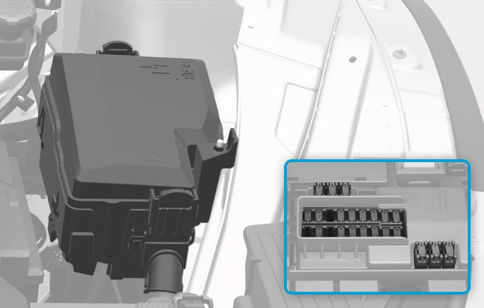
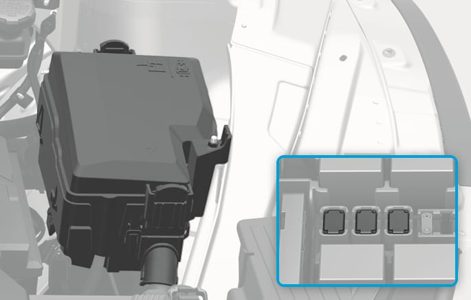
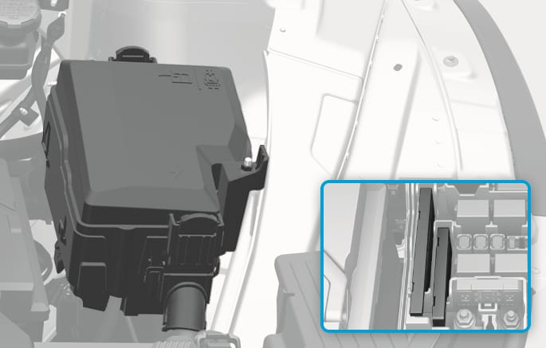

퓨즈 교체하기
-
모터룸 퓨즈 박스 안에 일부 블레이드 타입 예비 퓨즈가 설치되어 있습니다.
-
예비 퓨즈가 없는 경우, 오디오 등 차량의 운행에 직접 영향을 미치지 않는 장치의 퓨즈를 뽑아 임시로 사용할 수 있습니다.
-
전조등이나 다른 전기 장치가 작동하지 않을 때 실내 퓨즈에 문제가 없다면 모터룸 퓨즈 또는 메인 퓨즈를 점검하십시오.
-
전구에 문제가 없는데도 전조등, 방향지시등, 차폭등, 주간 주행등, 제동등, 후진등, 미등 또는 실내 스위치 조명이 작동하지 않는 경우, 당사 직영 하이테크센터나 블루핸즈에서 차량을 점검하십시오.
-
차량의 시동을 끄고 모든 전기 장치를 끄십시오.
-
퓨즈 박스 커버를 분리한 후 커버 안쪽의 퓨즈 라벨을 확인하십시오.
-
이상이 발생한 장치에 따라 실내 퓨즈 박스 또는 모터룸 퓨즈 박스의 퓨즈를 확인하십시오.
블레이드 타입
2C_EngineRoomFuseReplacement_2
카트리지 타입
2C_EngineRoomFuseReplacement_3
-
-
퓨즈 교체용 클립을 사용해 단선된 퓨즈를 제거하십시오.

2C_EngineRoomFuseReplacement_1
-
동일한 용량의 예비 퓨즈를 퓨즈 슬롯에 끝까지 밀어 넣어 설치하십시오.
-
퓨즈 박스 커버를 닫으십시오.
-
멀티 타입 퓨즈가 단선된 경우 임의로 분해하거나 교체하지 말고 당사 직영 하이테크센터나 블루핸즈에서 차량을 정비하십시오.
-
멀티 타입 퓨즈는 볼트나 너트로 고정되어 있습니다.
-
멀티 타입 퓨즈의 설치가 불완전하거나 각 퓨즈가 정확한 체결 토크로 고정되지 않는 경우, 장치가 정상적으로 작동하지 않거나 차량 손상 및 화재가 발생할 수 있습니다.

2C_EngineRoomFuseReplacement_4
-
-
모터룸 퓨즈 박스 커버를 닫을 때 '딸깍' 소리가 날 때까지 밀어 단단히 고정된 것을 확인하십시오. 커버를 정상적으로 닫지 않으면 수분이 유입되어 전자 장치가 손상되거나 정상적으로 작동하지 않을 수 있습니다.